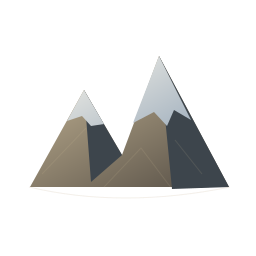
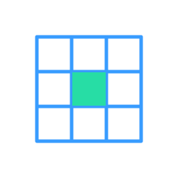
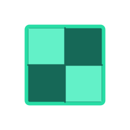
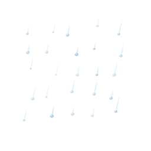
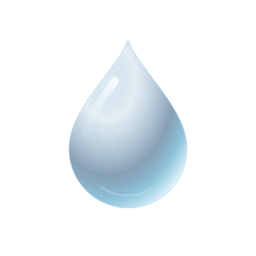
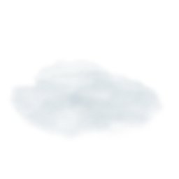

Frontier Terrain Studio
WebGPU
Geomorphology & SatMap Layer-Stack Engine
World Preset
Grid
1024 × 1024 (Preview)
2048 × 2048 (High)
4096 × 4096 (4K, full GPU)
01
Terrain Stack
→
02
Texture Stack
→
03
World & Sky
All Layers
WebGPU Compute · Live
Erode +25
Auto-Erode Sim
Export Maps
+ Add Layer
3D Viewport

Split 3D / 2D Map

2D Data Map
Cross-Section Profile
Real-Time Geomorphology Viewport
WEBGPU · 1.8 ms
5.0 × 5.0 km · Peak 2380 m · Mean Slope 28.4° · Snow 26%
+ Construct Layer
A

Step Erosion
Live Erosion
3D Sculpt Brush

Water Table

Atmosphere & Fog
Turntable
Frame
Relief
0m – 2380m
· Eroded
18.4M m³
· Cycles
105
Raise
Carve
Smooth
Local Erode
Hydro Spring
Radius
Strength
Reset Sculpt
1.0 km Scale · LMB Orbit · RMB/Shift Pan · Alt+LMB Sun
X
Y
Z